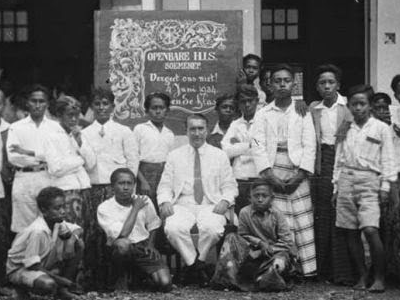

Tokoh Islam Pasca-Kemerdekaan

📖 Tentang
Setelah kemerdekaan Indonesia, tokoh-tokoh Islam Nusantara berperan besar dalam membangun bangsa. Mereka aktif di bidang pendidikan, sosial, dan politik, serta menjaga persatuan di tengah masyarakat yang beragam.
Nilai-nilai Islam yang moderat dan toleran terus dikembangkan, sehingga Islam di Indonesia tumbuh sebagai kekuatan yang mendorong kemajuan dan harmoni bangsa.
🕰️ Timeline Sejarah
1945
Proklamasi Kemerdekaan Indonesia. Tokoh-tokoh Islam ikut merumuskan dasar negara dan menjaga persatuan bangsa.
1952–1970an
Peran aktif ormas Islam seperti NU dan Muhammadiyah dalam pembangunan pendidikan, sosial, dan politik nasional.
1980–1998
Kebangkitan intelektual muslim, berdirinya ICMI, dan peran tokoh Islam dalam reformasi sosial serta politik.
1998–2004
Era Reformasi: Tokoh Islam seperti Gus Dur menjadi Presiden RI, penguatan demokrasi dan pluralisme.
2004–Sekarang
Tokoh Islam berperan dalam penguatan moderasi beragama, dialog antarumat, dan pembangunan bangsa di era global.